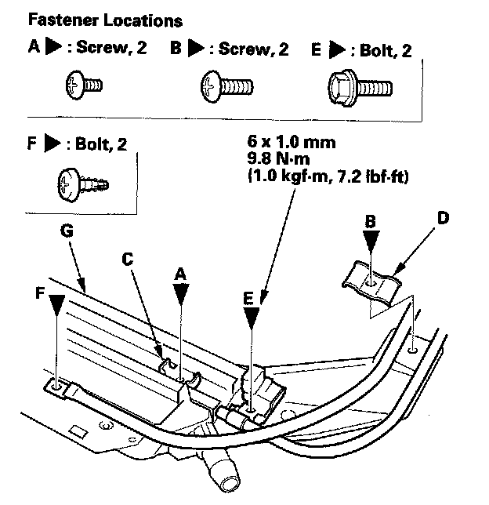
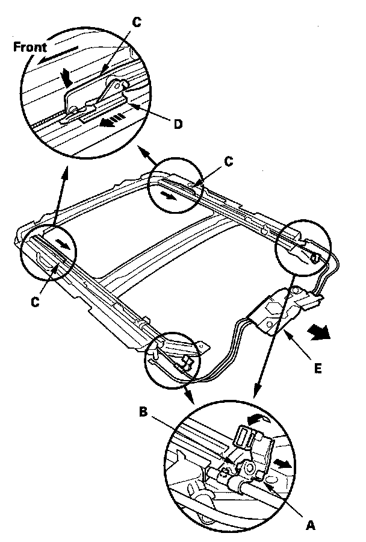
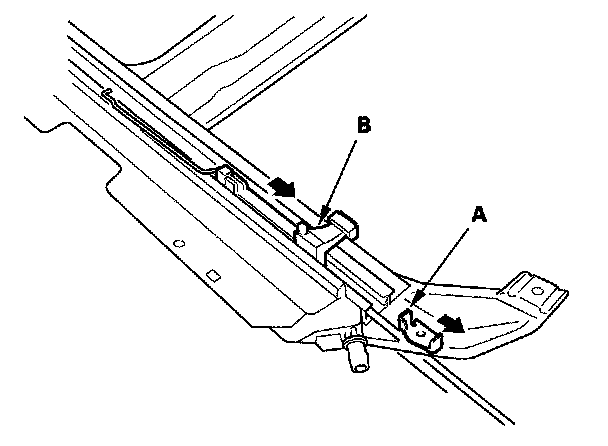
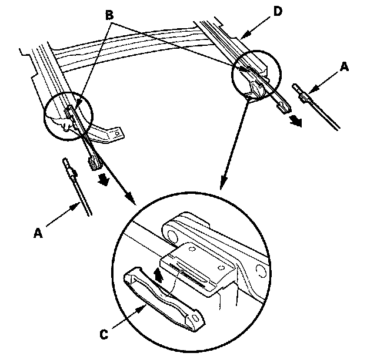
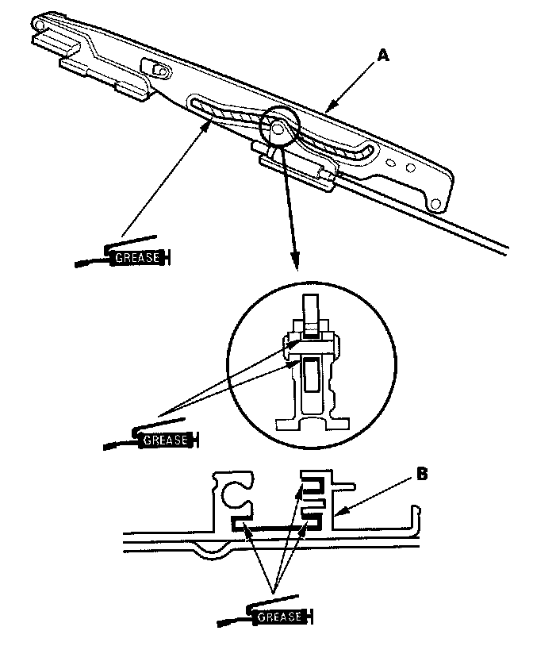

Drain Channel Slider and Cable Assembly Replacement
Drain Channel Slider and Cable Assembly Replacement1. Remove the frame.
2. Remove these parts from the frame:
- Sunshade
- Moonroof motor

3. Put on gloves to protect your hands. Remove the screws (A, B) securing the slide stops (C), and cable tube rear brackets (D), cable tube side bracket mounting bolts (E) and the cable tube mounting screws (F) from both sides of the frame (G).

4. Turn both cable tube side brackets (A) up to release the hooks (B) from the holes in both sides of the frame.
5. Pivot the glass brackets (C) down by sliding the link lifters (D) back, then slide both glass brackets back with the link lifters.
6. Slide the cable assembly (E) half-way.

7. Remove the slide stops (A) and the drain channel sliders (B) from both sides.

8. Slide the cable assembly (A) and both glass brackets (B) back, remove the deflector sliders (C) from both glass brackets, then remove them from the frame (D).

9. Install the slider and cable assembly in the reverse order of removal, and note these items:
- Damaged parts should be replaced.
- Apply multipurpose grease to the glass bracket (A) and guide rail portion of the frame (B) indicated by the arrows.
- Before reinstalling the motor, make sure both link lifters are parallel, and in the fully closed position.
- Before reinstalling the motor, install the frame and glass, then check the opening drag.
- After reinstalling the motor, reset the moonroof control unit.